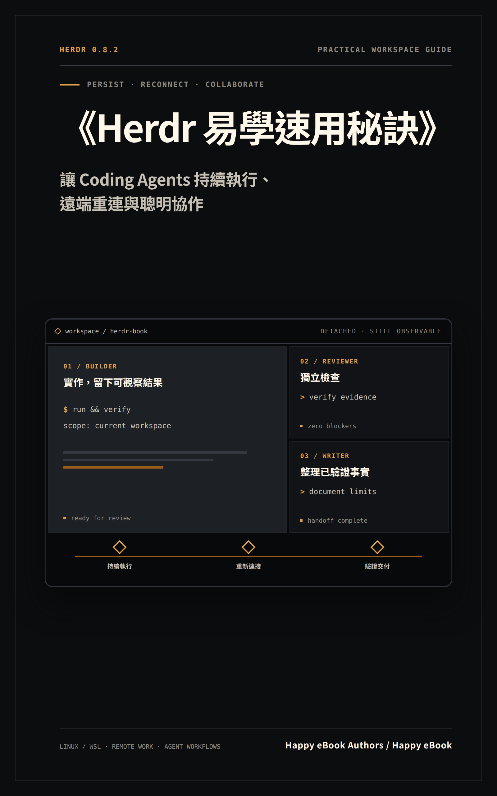

電子書
Herdr 易學速用秘訣
讓 Coding Agents 持續執行、遠端重連與聰明協作

Herdr 易學速用秘訣
讓 Coding Agents 持續執行、遠端重連與聰明協作
Herdr 是一個讓終端機工作位置更容易理解、重新連接與驗證的工具。本書不把「畫面還在」誤當成「工作已完成」，而是從持久化邊界、第一次 marker、detach／重新連接開始，逐步帶你看懂 session、workspace、tab、pane 與 agent 的責任範圍。 你會先完成普通 pane 的可驗證練習，再學習遠端 SSH、server 重啟、官方整合、自動化控制與多代理程式協作。每個進階流程都配有 timeout、blocked、unknown、產物與清理條件，幫助你在沒有 Herdr 或 coding agent 經驗時，也能安全地判斷「現在真的完成了什麼」。 適合想整理 shell、測試、開發伺服器與 coding-agent 工作流程的讀者；不要求先熟悉 tmux 或其他終端機多工工具。